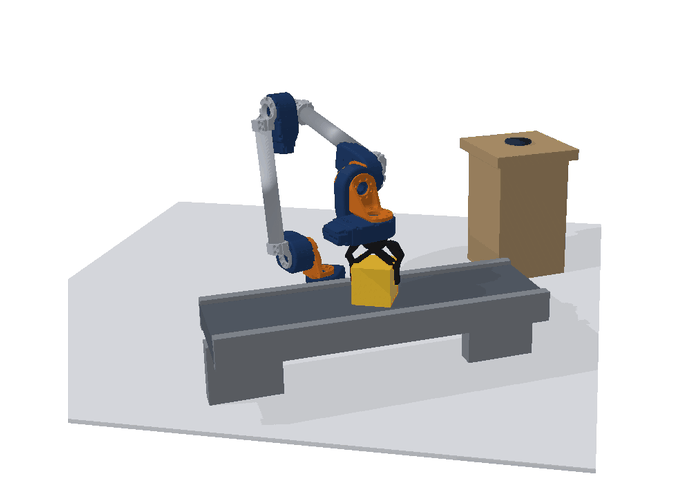
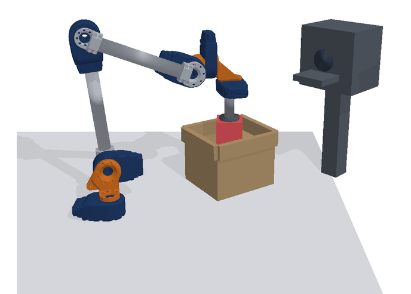

Three groups of three after the textbook: transfer (a)-(c), tending (d)-(f), stacking (g)-(i). Every part is a 70 mm block, and each group has one cell of each mass: yellow 1.0 kg, blue 1.5 kg, red 2.5 kg. The arm in each cell is the design the coordination found for that cell at weight 1.
Transfer

(a) pick and place, 1.0 kg, conveyor to bench

(b) cart loading, 2.5 kg, bin to the dock of the cart